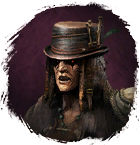
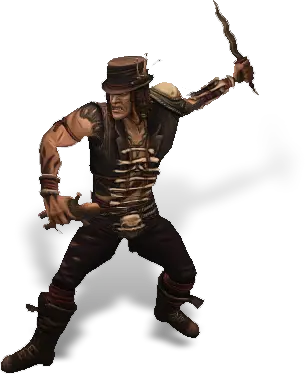
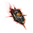

Открыть в интерактивной вики →

| Уровень | лёгк. 50 / норм. 60 / тяжел. 70 |
|---|---|
| Зоны атаки | ближняя, дальняя, ментальная |
| Шанс дропа 100% — уровни | лёгк. 1-40 / норм. 1-40 / тяжел. 1-50 |
| Шанс дропа 90% — уровни | лёгк. 41-50 / норм. 41-50 / тяжел. 51-60 |
| Шанс дропа 70% — уровни | лёгк. 51+ / норм. 51+ / тяжел. 61+ |
| Группа боссов | Непокой |
| Сила (PvE) | лёгк. 1411 / норм. 3134 / тяжел. 4141 |
| Аспект арены | Gherudu |
| Здоровье | лёгк. 4600 / норм. 9100 / тяжел. 13 000 |
| Мана | 4500 |
| Выносливость | 3600 |
Команда

Навыки


Дроп
 Элементарный глиф
Элементарный глиф  Ученический глиф
Ученический глиф 

Путь непокоя
 II-III
II-III 
 Даймонит 3
Даймонит 3 | Рары | Синергетики | Эпики | |||
 Рары Рары  Рары Рары  Рары Рары | 20-30 ур. |  Эпики Эпики | |||
Прочее:  Элементарный глиф Элементарный глиф  Ученический глиф Ученический глиф  Путь непокоя Путь непокоя | |||||
Требования для входа
тяжел.: Путь непокоя
Путь по картам
Статистика
 |  |  | |||
| Уровень: 50 | Уровень: 60 | Уровень: 70 | |||
Здоровье: 4 500 Мана: 4 500 Выносливость: 3 600 | Здоровье: 9 100 Мана: 4 500 Выносливость: 3 600 | Здоровье: 13 000 Мана: 4 500 Выносливость: 3 600 |
Умения
| Высасывание Души Обычная атака | Теневой Удар | Удар в живот Отупление Булавка в глаз Явление смерти Укол Куклы Отравление |
Иммунитеты / особые умения
-
Локация
Башня бандитов